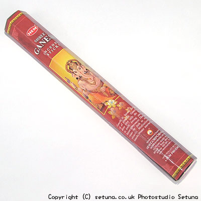

そのまま嗅ぐと強く柑橘系の匂いがします。
強すぎて他の香りがよく判らないくらいです（笑
部屋にそのまま立てておいておくと、オレンジの花の香りが全体的に香り始めます。
火を点けてもタンジェリンオレンジのような柑橘系の香りがぱっと香り始めます。
その後サンダル系の香りが混ざり、まるで２つの香りが手をつなぐ様に１つになり始めます。
ドゥルガー香にも感じが似ていますがもっとずっとオレンジっぽくて、スパイシーな柑橘系ですね。
燃え進むにつれて部屋の上層から中層にかけてうっすらと優しいオレンジの香りが漂い、下の方にかけて白檀やクローブ、シナモン等のスパイス類、そしてカンラン科特有の清涼感とオレンジの混ざったような柑橘系の匂いが漂います。
まるで目に見えないオレンジ色のグラデーションが部屋の中に出来上がっているかのようです。
火を点ける前後であまり差が出ないタイプのお香ですね。
とても気持ちがいいのでついついうっとりしてしまう香りです。
燃え尽きた後の残り香はそのまま長い間続きます。
